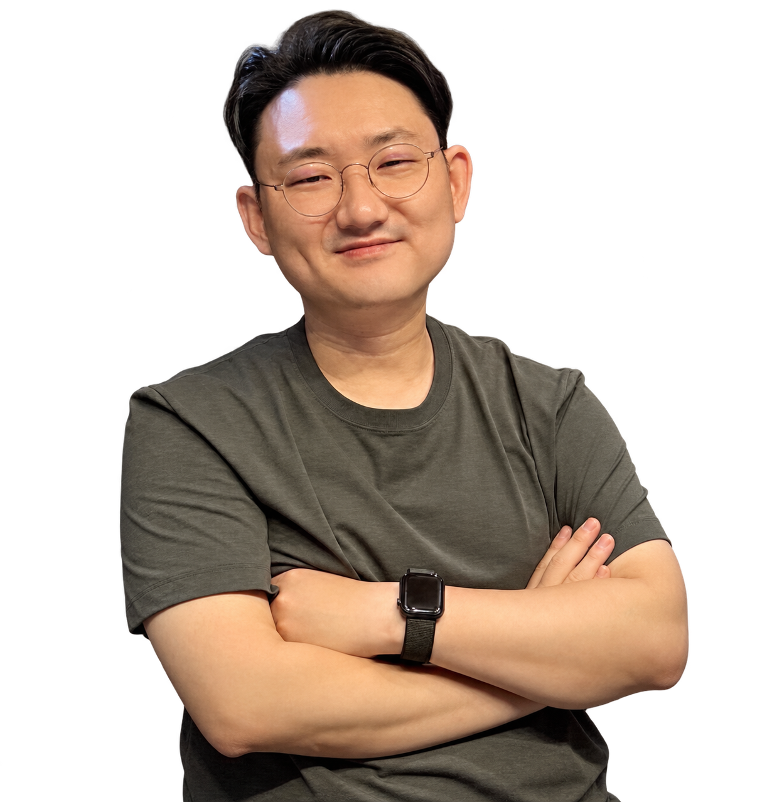
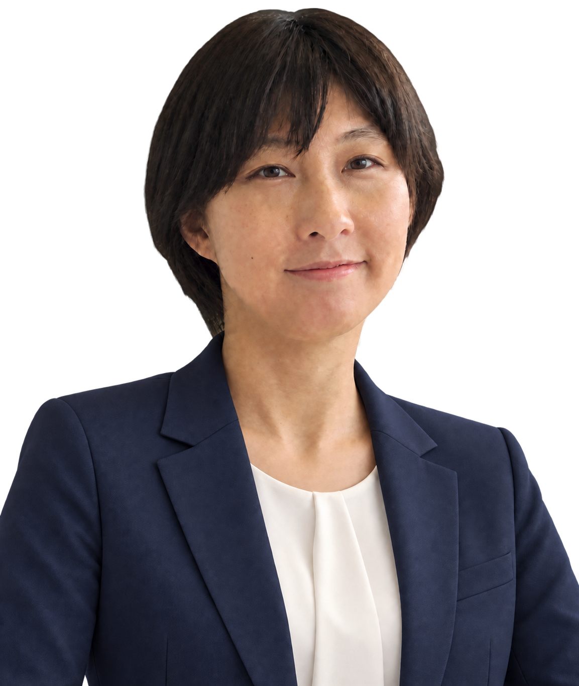
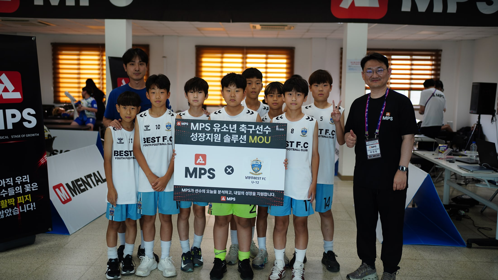

멘탈
스포츠심리평가 · 인지검사
측정평가→멘탈멘토링

바이오밴딩 기반 멘탈·피지컬 측정평가 및 강화서비스
일반 기업용 사업소개서
바이오밴딩 기반 멘탈·피지컬 측정평가 및 강화서비스
성장단계가 해석의 기준입니다.
스포츠심리평가 · 인지검사
기능평가 · 수행능력 측정
성장단계와 실제 측정 결과를 함께 해석합니다.
개인별 성숙도
멘탈·기능평가
개별 강화계획
기존 MPS 리포트의 실제 출력 사례입니다. 종합 결과부터 세부 해석과 관리 가이드까지 담습니다.
2026mental · 2026physical · 2026growth의 기존 심화 리포트를 각각 보여드립니다.
멘탈·피지컬·성장 결과를 휴대폰에서 확인하는 기존 모바일 리포트 화면입니다.
현장의 측정평가 노하우를 프로그램과 기술로 발전시킵니다.
측정평가 모델의 기술 자산화
성장·멘탈·피지컬 데이터
성장단계 기반 해석 모델
프로그램·리포트·운영 도구
스킬·피지컬·의료기관의 전문성을 하나의 선수 여정으로 연결합니다.
기술훈련 · 개별 피드백
기능평가 · 컨디셔닝
측정 · 해석 · 상담·진료
전문성과 고객 이해가 MPS 프로그램의 출발점입니다.

해온한의원 본원 대표 한의사
동국대·가천대 한의학과 겸임교수 경력
FIFA 축구의학 코스 수료
스포츠한의학회 공인 팀닥터
서울 대동초 축구부 팀닥터
축구선수 학부모의 관점
선수의 몸과 마음을 함께 이해
평가를 실제 지원으로 연결
전문가 해석을 기록과 서비스로 구현하는 팀입니다.
스포츠마케팅·축구행정 20년

성남FC 프로선수 출신

교육·상담·평가 현장 운영

AI 웹솔루션 개발 총괄
현장 매니저
측정 앱·리포트 설계
한의학박사·전문의
초음파·한방내과·팀닥터
브랜드의 목적과 지역 접점에 맞춰 협업 범위를 함께 정합니다.
성장기 선수와 보호자를 위한 교육 콘텐츠·현장 프로그램을 공동 기획합니다.
지역 축구팀·센터와 측정 및 설명 프로그램을 설계합니다.
선수 지원에 필요한 제품·콘텐츠·운영 서비스를 연결합니다.
기존 사업자료에 수록된 측정 현장과 데이터 축적 경험입니다.

월평균 기록 축적
현장 네트워크
실제 운영 경험을 다음 프로그램과
파트너 지원 체계로 발전시킵니다.
선수의 반복 이용과 제휴기관의 프로그램 운영을 기반으로 합니다.
가입 조건이 서로 다릅니다.
의료기관은 SaaS·공동광고비 별도 / 최초 가맹비 300만원.
선수·보호자가 선택한 프로그램 이용료
프로그램·인증 운영·대시보드
공동 캠페인·지역 프로그램별 협의
첫 협업의 대상과 범위를 정하고 반복 가능한 운영 과정을 만듭니다.
목표·대상·지역 합의
담당자·기관·자료 준비
측정·설명·후속 연결
이용 경험·운영 개선
SPORTS MPS · 주니어골든에이지
협업 목적과 대상 지역을 정하면,
MPS가 프로그램·파트너 구성·운영 범위를 함께 설계하겠습니다.